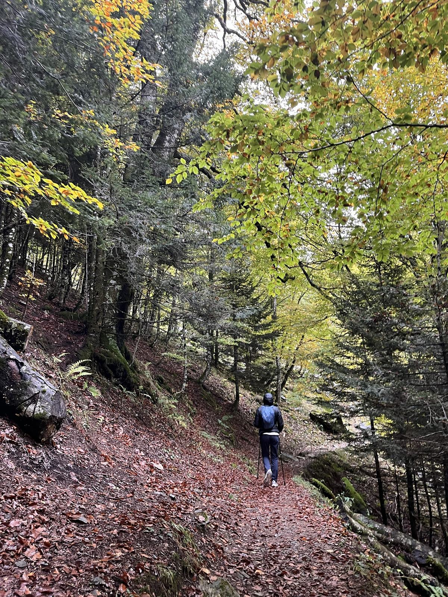
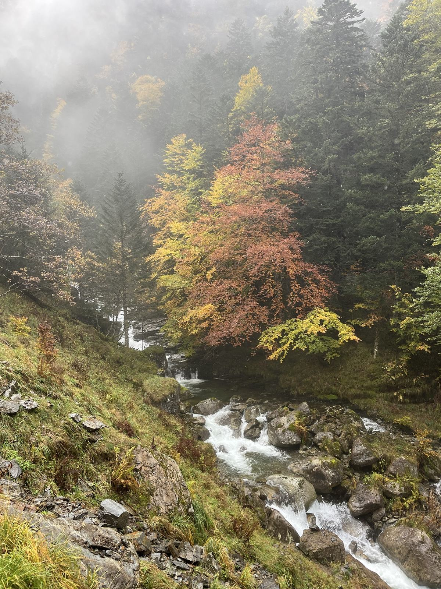
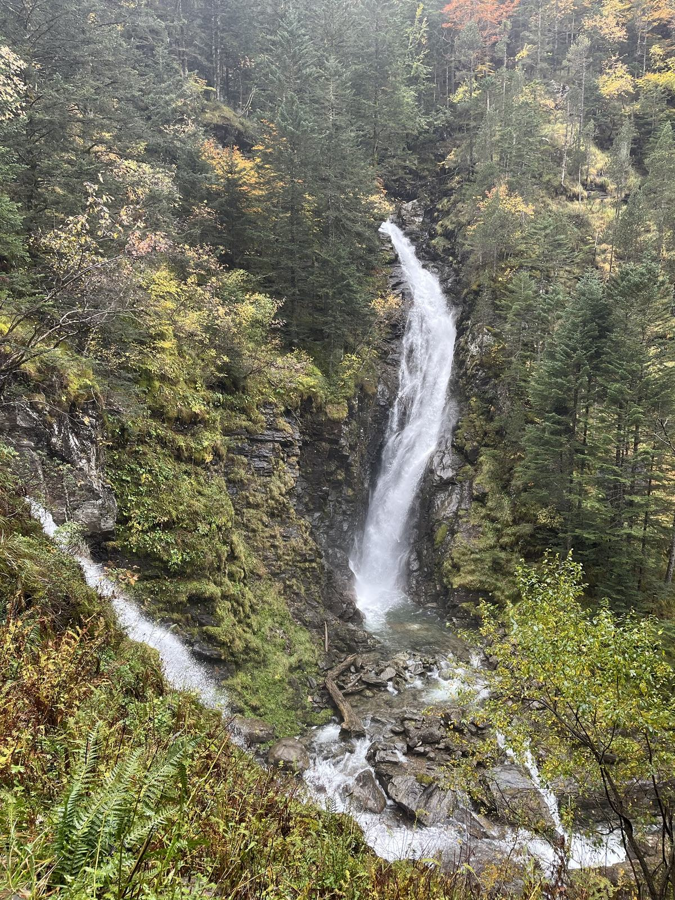
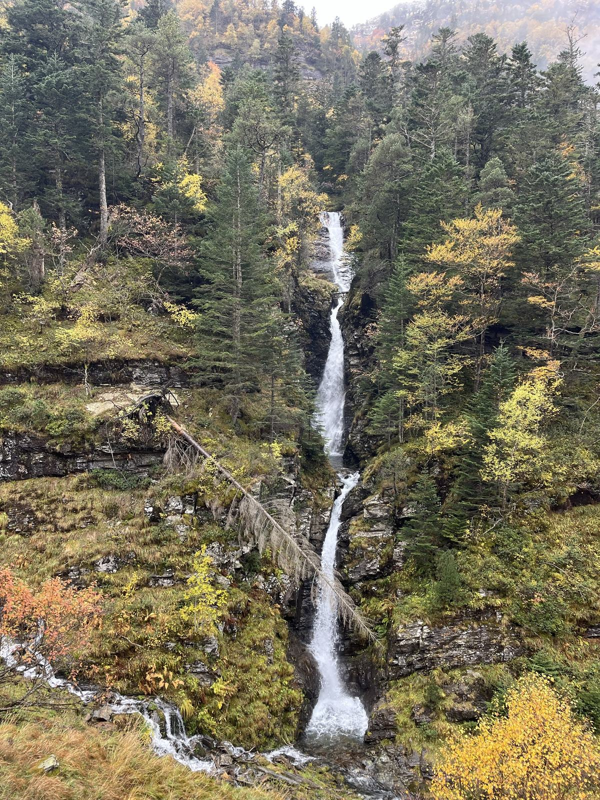
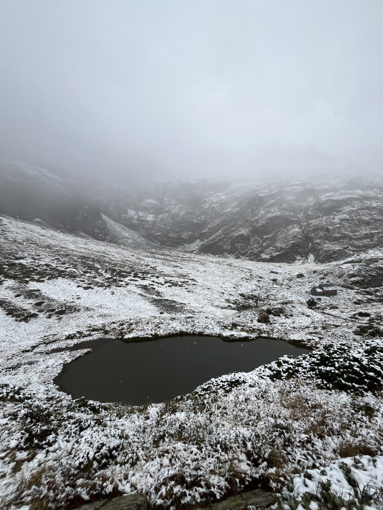
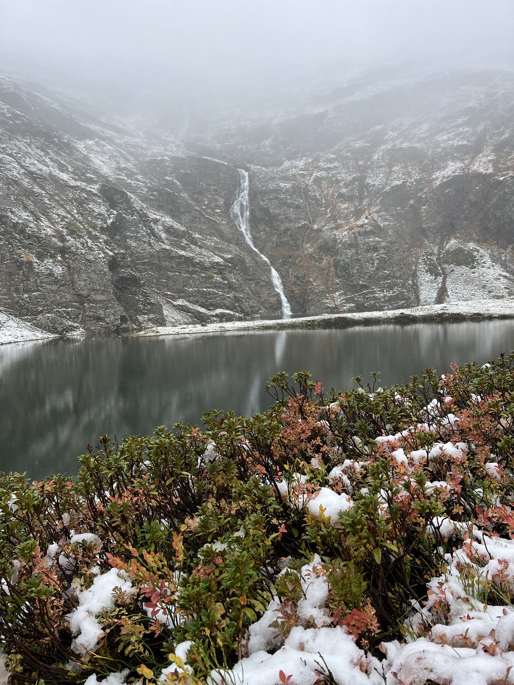
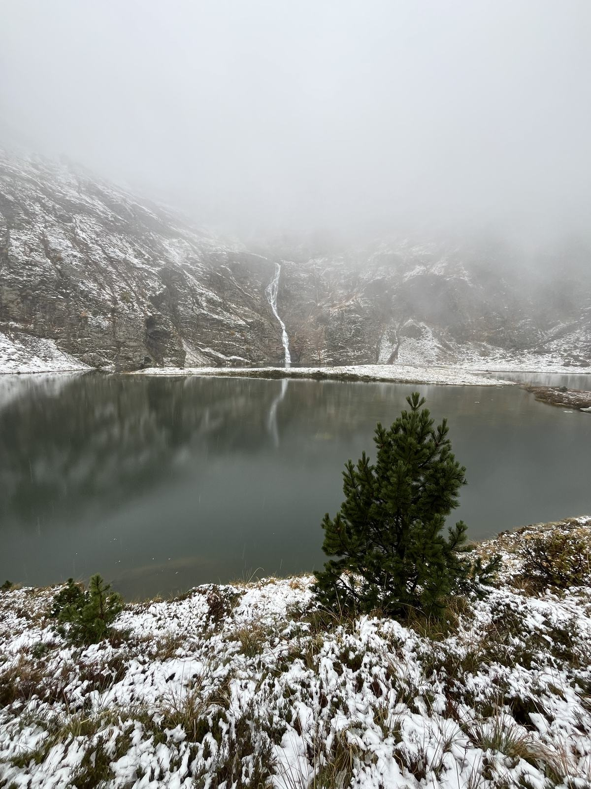
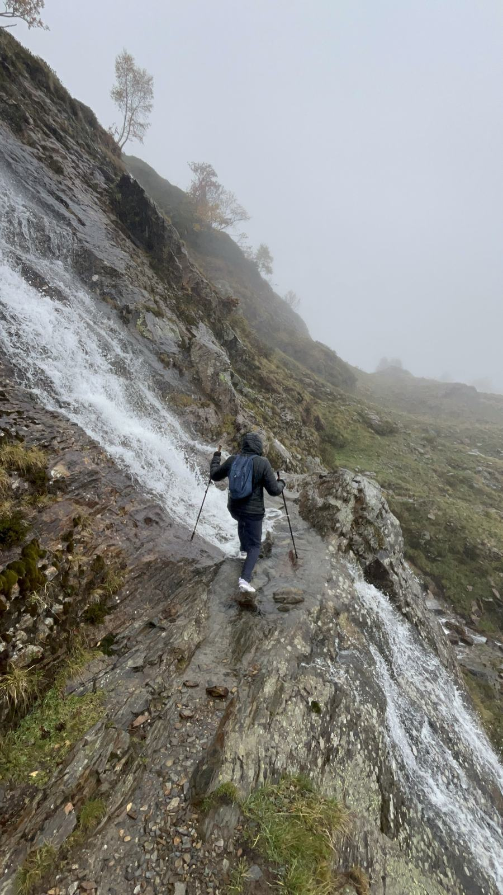
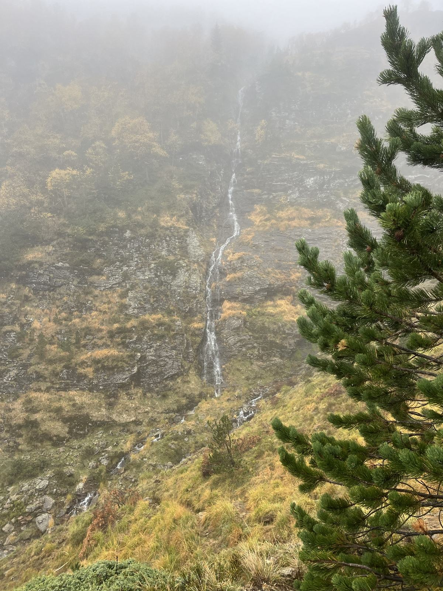
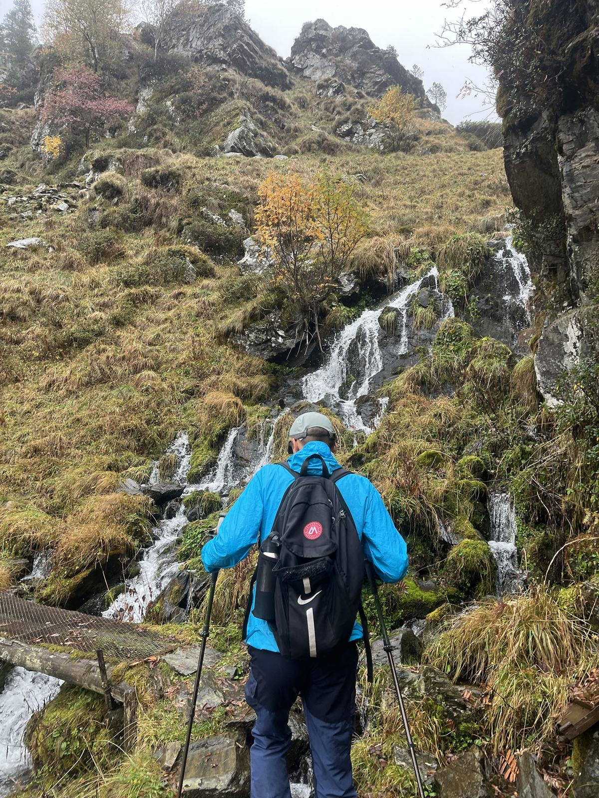

📋 Fiche technique
- 🥾 Pratique : randonnée
- 📏 Distance : 13,7 km • ⬆️ 995 m D+
- 🔁 Type : boucle
- ⏱️ 4h44 de marche (mon temps)
- 📍 Départ : Castillon-de-Larboust (près de Bagnères-de-Luchon) [parking à préciser]
- 💪 Difficulté : soutenue
- 💧 Points d’eau : [à compléter]
🚶 Le parcours
[Débrief d’Adrien à venir : déroulé de l’itinéraire, points forts, ambiance.]
📸 En images










⚠️ Points d’attention
- [Points d’attention à compléter]
💡 Mes conseils
- [Conseils à compléter]
📹 La vidéo
[Lien de la vidéo à ajouter]
🧰 Pour préparer votre sortie (points d’eau, ravitaillement…), jetez un œil à ma page Outils.